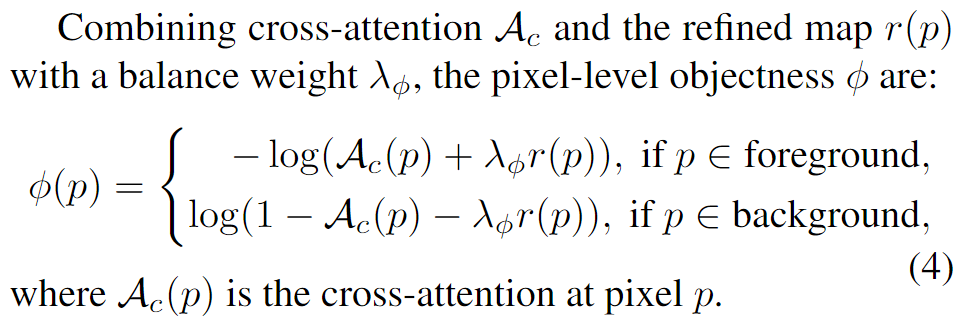
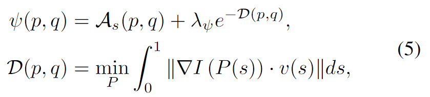

Diffusion x 语义分割
Diffusion Model 基本知识
无监督
DiffusionSeg
DiffusionSeg1提出了一种无监督语义分割/目标检测的两阶段算法。
Synthesis阶段： 1. 生成image：选择训练好的t2i Stable Diffusion2，从ImageNet中采样类别名称并且使用ChatGPT生成上下文丰富的prompt，与随机噪声送入模型进行inverse diffusion，得到合成的输入图片； 2. 抽取、聚合mask：用prompt中cls token抽取cross attention中的特征图 \(A_c\)（原始粗糙mask），并抽取self attention的特征图 \(A_s\)，并且在不同层和不同时间步上聚合； 3. Refine mask：根据“用\(A_s\) refine \(A_c\) 的边界，用 \(A_s\) 和 输入图片像素间RGB距离和欧氏距离来提升coherence区域的响应”，设计了能量函数并且使用图割算法最小化；（比直接使用KMeans,NCut, DenseCRF效果好）
Exploitation阶段：
- DDPM的扩散过程每一步都需要引入随机噪声，这里使用DDIM的思路，获得确定的噪声，利于重建；之后在反向过程中，获得特征图；
- 输入图片和之前生成的prompt送入CLIP？
- 用AttentionCut生成的pseudo mask作为监督，训练简单的三层 FCN Decoder（Diffusion Model 是冻结的）
因为笔者知识储备不足，加之目前没有开放源代码，笔者还有如下疑问： 1. 为什么在DiffusionSeg中，类别标签要由CLIP选出，而不直接用AttentionCut中输入的类别标签？ 2. objectness的能量函数的定义中，像素 \(p\) 属于前景/背景的先验从哪来？是使用阈值 \(\tau\) 对 \(A_c\) 进行初步二值化得到的吗？以及，在 \(p \in \text{background}\) 时的目标是不是少了一个负号？  3. Inner Coherence中定义的Spacial Coherence \(\mathcal{D}(p,q)\) 是来自于哪个传统的方法？ 
全监督
尝试用逆扩散过程实现密集预测，输入图像的特征作为逆扩散过程中的“条件”。
SegDiff
DDP
这篇文章（DDP3）在技术上的贡献包括：
- 将噪声与图像特征拼接作为输入的、由几层attention堆叠的，map decoder的简单设计；
- 通过探索多种方式，确定在加噪之前，使用可学习的参数将离散gt label映射到连续空间；
- 确定了 cos schedule for \(\alpha_t\) 比 linear schedule for \(\alpha_t\) 要好；
- 为seg任务使用CE loss，为depth任务使用sigloss，而不是用扩散模型原来用的L2损失，更好些；
- 观察到推理时过多的步数，性能下降，认为是训练和推理时噪声分布不一致造成的，通过在模型训练后期使用自训练解决了这个问题；
在这样的pipeline下，模型还有两个故事性的贡献，均得益于不同时间步的推理得到不同的结果：
- 动态推理能力
- 通过几个推理map的比较知道模型uncertainty的区域；
其他
GeoDiffusion
GeoDiffusion4 希望使用真实目标检测数据集训练一个能从layout生成图片（L2I）的生成模型，并用生成数据作为增强数据训练目标检测模型。
这篇文章在技术上的贡献包括：
- 探索了将stable diffusion模型finetune为GeoDiffusion的方法，细节包括：
- 将离散的bounding box信息和相机角度信息通过索引可学习编码的方式转换为text embedding；
- 将前景区域按照其面积大小进行加权，面积越小，权重越高，损失权重越大；
- 训练时的超参设置；
- 探索了3种评价生成数据的方式：
- 测试FID，并且使用在训练集上训练的Mask R-CNN模型作为Oracle，在验证集上，用oracle对于生成数据进行预测并计算与gt box的AP (类似YOLO score)，与oracle在验证集上的AP越一致，说明数据越真实。
- 将生成数据与不同比例的真实数据混合，训练Faster R-CNN模型，观察生成数据的增强效果；
- 对于训练集中出现的layout，使用随机flip和shift，发现生成结果也不错，这也被用在了detector的训练中；
- 在COCO上训练的GeoDiffusion模型还具有不错的Inpainting能力。
这篇文章提出的这种对于T2I DMs的微调方式使得DMs在给定layout的情况下能够生成前景数量丰富的图片，但是这限制了微调后GeoDiffusion只能作为训练集的增强模型，其对于OOD的layout有一定泛化能力，但是对于训练集没有出现的类别以及不能再像原sd一样生成。